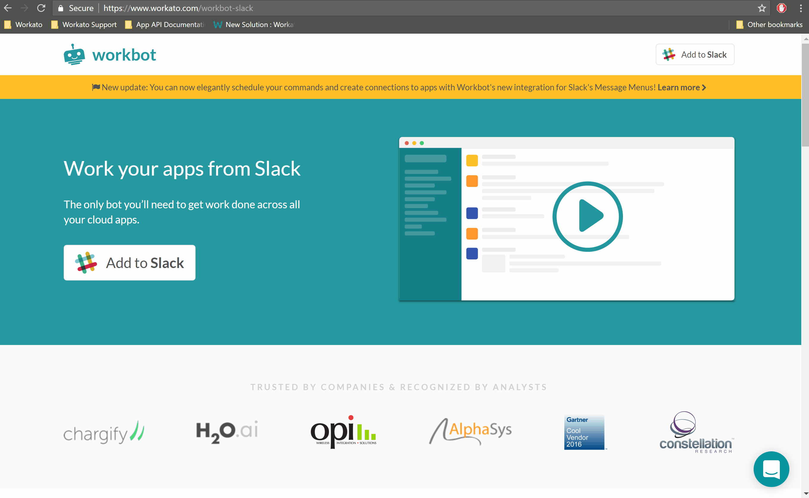
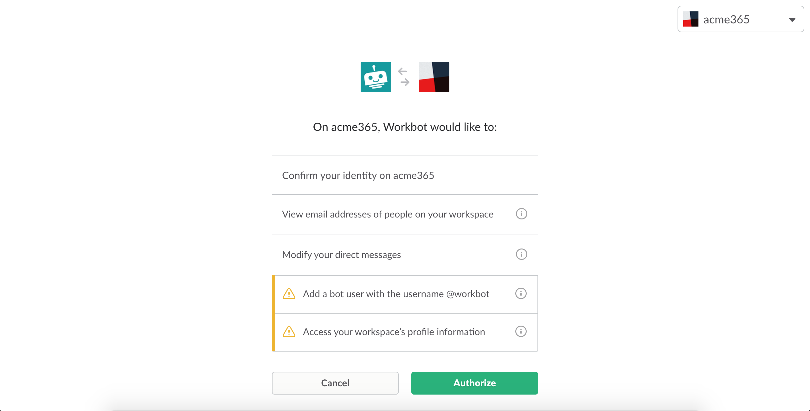
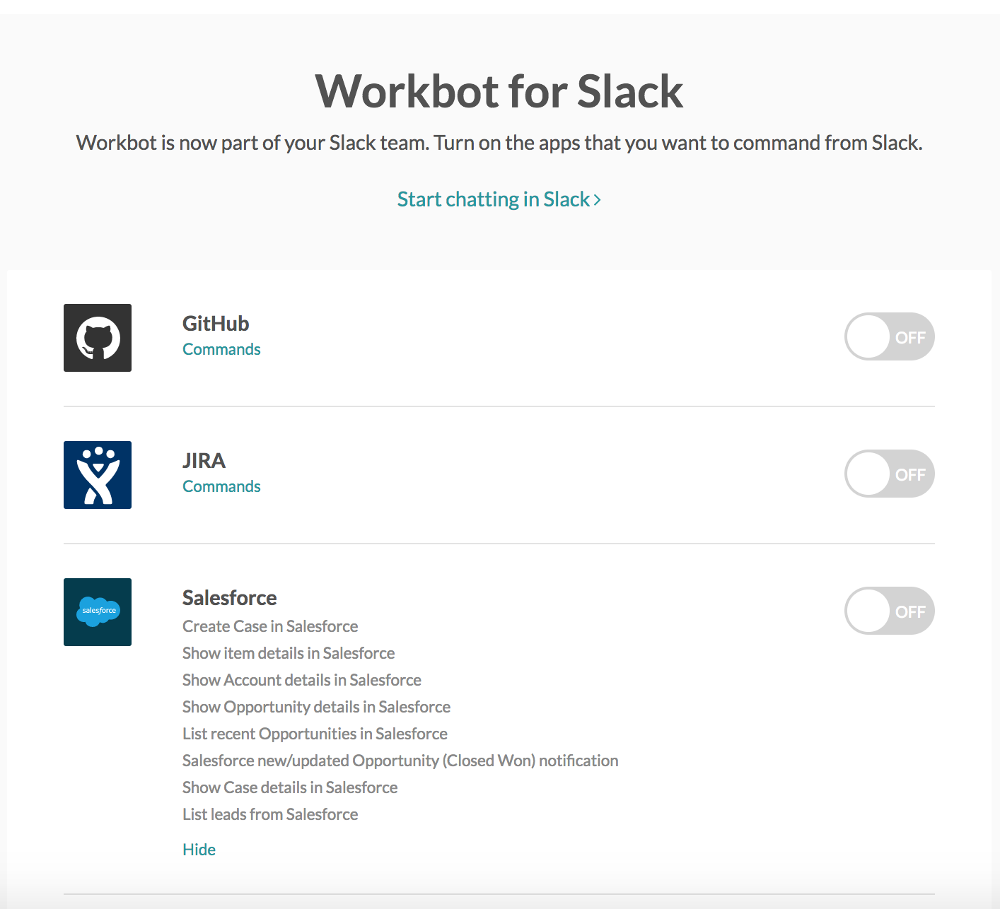
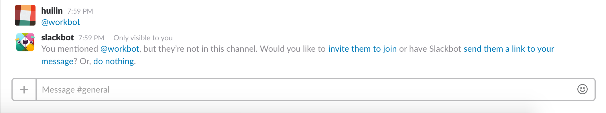

Workbot for Slack setup
In this article, we cover how to setup Workbot in your Slack organization:
- Add Workbot to Slack
- Connect Workbot to your apps
- Invite Workbot to channels
1. Add Workbot to Slack
Add Workbot to your Slack organization here. When you add Workbot to your organization, all team members in a channel will be able to view the notifications Workbot posts to that channel, and any team member will be able to interact with Workbot via direct messages.
When adding Workbot to your Slack organization, you will be prompted to enter your team's Slack URL.
 Enter your team's Slack URL to setup Workbot in your Slack organization
Click Continue, then Add to Slack, and Slack will generate a popup that asks you to authorize Workbot to have access to your Slack organization. Once you click Authorize, Workbot will be added to your Slack organization.
 Click Authorize to finish adding Workbot to your Slack organization
2. Connect Workbot to your apps
Once you've added Workbot to your Slack organization, you will be able to see the list of apps that Workbot is able to interact with by default.
 List of apps Workbot can interact with by default
List of apps Workbot can interact with by default
To view the available commands you can use with Workbot (via the pre-built Workato recipes), click Commands.
 List of available Workbot commands for Salesforce
To enable the commands for an app, toggle the switch for that app to On. Workbot will prompt you to connect with that app and authorize it to have access to read, write or do both to that app. For example, when we try to toggle Github app on, it requests for our authorization.
 Popup requesting for connection and authorization is generated when we toggle on the Github commands
Popup requesting for connection and authorization is generated when we toggle on the Github commands
In the following example, we connect to Salesforce to allow Workbot to retrieve details about our Salesforce opportunities, accounts and cases, etc. for posting onto Slack, as well as create new campaigns, accounts and cases for us from Slack.
Once connected successfully, the switch turns On. The following screenshot shows that Workbot is successfully connected to Salesforce. Team members can now interact with Salesforce via Workbot in Slack.
 Salesforce commands toggled on
Salesforce commands toggled on
3. Invite Workbot to channels
You can interact with Workbot via direct messages immediately after adding Workbot to your Slack organization. Direct message with Workbot are not visible to anyone but you.
You can also interact with Workbot on channels it has been invited to. Note that conversations with Workbot on channels are visible to all team members in that channel. To invite Workbot to a channel, mention Workbot via @workbot.
Furthermore, in order for Workbot to post notifications to a Slack channel, it has to first be invited to that channel.
 Invite Workbot to channels by mentioning @workbot
Alternatively, invite Workbot via the Invite new members to join menu option in channel details.
 Invite Workbot to channels via the menu option
Invite Workbot to channels via the menu option